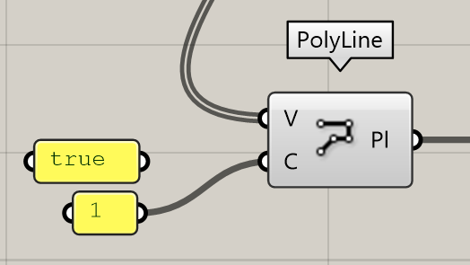

My Blog

Grasshopper 102
05/07/2024
Diseño paramétrico
Contenedores entradas y curvas
descargo de responsabilidad:
LAHV Design es un proyecto personal sin fines de lucro, todos los recursos(redactados y/o descargables) aquí compartidos son libres de uso, sin embargo no me hago responsable de ninguna manera de las decisiones que terceros tomen con dicho recuso.
En el articulo anterior hablamos sobre cómo se componen y como se conectan entre ellos los componentes de un algoritmo de GH.
Ahora hablaremos sobre tipos específicos de componentes y la forma en que mejor podemos usarlos para sacarles todo el provecho y para ello haremos un par de ejemplos.
El archivo de este tutorial lo dejare hasta el final para que lo puedas descargar.
Los contenedores como su nombre lo indica sirven para almacenar diversa información
En la imagen anterior podemos ver los tipos más comunes de contenedores y los objetos que almacenan en cada caja de texto a excepción del llamado “Geometry pipeline” que mencionaremos más tarde.
Para el primer grupo de estos contenedores podemos observar similitudes en cuanto forma.
El icono de cada uno de ellos tiene un hexágono de un color negro solido y encima tienen un icono en blanco que representa lo que almacena.
Todos tienen una entrada, una salida y ninguna de estas tienen etiqueta de nombre porque se sobre entiende que lo que entra es lo mismo que sale ya que solo almacenan información.
Vamos a usar uno de ellos ahora mismo para almacenar información de una serie de puntos.
Si hago un clic derecho sobre el icono de un componente puedo ver algunas configuraciones de visualización, de estado o del algoritmo.
Ahora me interesa hacer clic en “set multiple points”.
Enseguida me transporto a la ventana de rhino y comienza a hacer clics.
En la parte de la barra de comando te dará una sugerencia de lo que es necesario hacer para esta operación. Una vez que termines de hacer clics haz clic derecho o da enter.
En ese momento los puntos se colocan en el entorno de GH por lo que los veremos en el entorno de rhino.
Si selecciono el contenedor se iluminarán en color verde los elementos de ese componente.
Ya que hicimos un poco al azar esos puntos te puedes dar cuenta rotanto la vista o activando una de las vistas auxiliares que los puntos están todos en el plano de origen XY de rhino.
Vamos a hacer esa nube de puntos un poco mas interesante y manipularemos sus posiciones individualmente, para hacer esto de la manera simple encenderemos el gumball de GH ya que por defecto viene apagado. Vamos a la barra de menú y buscamos el gumball en la categoría de “display”, lo encenderemos y procederemos a arrastrar las flechas azules (en el eje Z) con el mouse.
Vamos a hacer esa nube de puntos un poco mas interesante y manipularemos sus posiciones individualmente, para hacer esto de la manera simple encenderemos el gumball de GH ya que por defecto viene apagado. Vamos a la barra de menú y buscamos el gumball en la categoría de “display”, lo encenderemos y procederemos a arrastrar las flechas azules (en el eje Z) con el mouse.
Ya estoy satisfecho con este resultado entonces vamos a ver que sucede dentro del componente. Colocaremos un componente aquí llamado “panel” lo buscaremos haciendo doble clic y tecleando este nombre.
Esto básicamente es un campo de texto editable y programable si yo le conecto algo en la entrada este servirá como una pantalla y me mostrara un poco mas espeficico lo que hay dentro del componente y sí le hago doble clic puedo escribir los caracteres específicos que quiero introducir como entrada a un componente.
Para este ejercicio podemos observar de lado derecho {0} esta es la “Branch” o rama de la estructura de árbol {0} esto nos indica que básicamente estamos en el tronco de la estructura de árbol, por ahora no te preocupes por eso lo mencionaremos cuando veamos listas por el momento es suficiente con que notes que hay 6 objetos en la lista y cada uno corresponde a los puntos que colocamos en rhino anteriormente, lo curioso es que están numerados del 0 al 5 donde el cero siempre es el primer elemento de la lista.
Colocaremos un elemento extra que nos sirve para ver estos índices del 0-5.
Con el componente “point order” podemos ver con una flecha negra cual es el siguiente punto de la lista y con el componente “point list” podemos ver el orden de los índices de los objetos esto nos ayuda de manera visual para poder identificar el orden de los puntos.
Si eres suficientemente observador te darás cuenta que el punto cero es el primer clic que hicimos cuando definimos la asignación de los puntos al componente de puntos. Por lo que si aquí en GH el orden de los valores si altera el resultado.
Ahora colocaremos un componente llamado “polyline”
Y la entrada V la conectaremos con nuestro contenedor de puntos.
y veamos lo que sucede, paso de ser 6 objetos a ser uno solo aparte de por el grosor de las líneas nos podemos dar cuenta por el contenido de los paneles.
En el componente hay una entrada que yo no conecté y es un valor booleano. Veamos mas de cerca. Y aprendamos lo que hay que hacer
Okay un valor booleano, es un dato que solo puede tener 2 valores a estos datos también los llamamos valores binarios. Puede ser alto o bajo, arriba o abajo, encendido o apagado, adentro o afuera, si o no, verdadero o falso, pero no ambos a la vez. Lo que quiere decir que son mutuamente excluyentes. Existe un tema muy interesante de matemáticas booleanas que no entra en el contenido de estos artículos pero, en fin, sigamos.
El valor de una entrada lo podemos asignar de diferentes maneras.
Veamos varias formas de hacer asignar este valor.
Al hacer clic derecho sobre la entrada “C” puedo ver que hay una categoría en “set boolean” y puedo ahora asignar un valor verdadero donde ahora es falso.
De igual forma puedo hacer clic derecho y hacer clic en “invert” esto lo que hará será dar el valor contrario a lo que sea que en este momento este asignado y como por ahora es falso, al seleccionar “invert” este será verdadero.

Otra forma de conectar una entrada es con un panel, como te mencione puedes escribir un texto y asignarlo como un valor a una entrada si el texto solo dice “true” ó “false” este será tomado como un valor Booleano.
También funciona un panel con el numero uno escrito en el.
Pero paneles no son la única forma de asignar valores de entrada de forma visual. Veamos otras.
En la pestaña de “params” dentro de la categoría “input” podemos ver que se encuentra el panel junto con otros componentes, explicare los más básicos y comunes de usar. Son componentes de entrada todos en función hacen lo mismo crean un dato que usamos como valor de entrada, pueden ser valores numéricos, alfanuméricos, booleanos, etc.
Por mucho la forma mas popular de asignar un valor numérico o booleano es un “number slider”
Básicamente es una “barrita” deslizable que cada línea de la recta numérica es un valor dentro de un rango de valores.
En la imagen anterior este numero es 0.250 por defecto. Puedo interactuar con el de 3 maneras diferentes. Doble clic sobre el texto de la parte color gris.
esto hace salir las propiedades del componente.
Sujetar el punto del centro y arrastrarlo con el mouse para cambiar los valores.
Si haces doble clic sobre el valor numérico se vuelve un campo de texto editable. (esto es super útil cuando necesitas probar con un valor exacto y el método de deslizamiento brinca entre 2 valores que no te sirven.
Regresemos a la primera imagen la de la ventana de las propiedades.
En esta ventana podemos configurar el valor mínimo, el valor máximo, el valor actual, el rango de valores y el tipo de valores.
Las características de dominio y valor numéricos son bastante auto explicativas, sin embargo, en “slider accuracy” podemos determinar el tipo de número que queremos generar.
R de numero con punto decimal (Real), N de números enteros (Natural), E de numero par (Even), O de numero impar (Odd).
Por ejemplo, vamos a crear un “slider” para números booleanos que solo son binarios entonces escogeremos la siguiente combinación de características.
Volviendo a nuestro ejemplo de la polilínea este será una polilínea cerrada cuando el valor sea uno y será una polilínea abierta cuando el valor sea cero.
Otra forma de asignar un valor booleano es colocando un “boolean toogle” o switch booleano, lo encuentras en la pestaña de “params” en la categoría de “input”.
Este cambiará el valor al hacer doble clic en la palabra en color gris oscuro.
Una forma mas es usar un selector de lista desplegable.
También lo encuentras en “params”> “input” y la hacer un clic sobre el se despliegan las opciones disponibles para seleccionar. Al hacer doble clic con el mouse se puede configurar.
Este es configurable y puede tener tantas opciones como renglones tenga. Lo que se encuentre después del símbolo de igual será considerado el valor que sale del componente.
Como en este ejemplo que los valores pueden ser en orden descendente números (zero y one), Ecuaciones matemáticas (valor 2), Funciones matemáticas como la raíz cuadrada de 16 (la opción “cuatro”) la cual es igual a el numero natural cuatro, pueden ser caracteres de texto simple como el carácter p minúscula (tiene que ser encerrado entre comillas forzosamente para que lo reconozca como un carácter de texto), así como en la opción seis el valor de salida es una cadena de caracteres encerrado entre comillas.
Como te puedes dar cuenta hay varias formas de llegar a un solo resultado. Es muy fácil usar un number slider y un panel, sin embargo, conforme te comiences a sentir cómodo usando GH esto se volverá tedioso de ver y un poco confuso para ser honesto.
Sin embargo, en la practica cuando desarrollamos códigos, mientras más claro sea, más fácil será identificar problemas. Una de las primeras habilidades que deberás estar pensando en desarrollar, es empezar a practicar la limpieza de tus códigos. Si en tu definición ocupas solo number slider para todo o puro panel, entonces será muy confuso de leer. Por lo tanto, tienes dos opciones.
- Puedes ocupar number sliders para definir números enteros o decimales, entradas de caracteres de texto con paneles y botones booleanos para valores booleanos.
- Puedes crear grupos de colores para identificar secciones de código y crear tu propio sistema de colores.
Mas adelante veremos consejos para utilizar mejor el entorno de trabajo en GH.
Así como puedes definir objetos en rhino desde grasshopper ahora haremos lo opuesto, definiremos un objeto en grasshopper usando geometrías de rhino.
Y comenzaremos haciendo un rectángulo esto lo podemos hacer con el boton de la operación o tecleando el comando rectangle. Definiendo el punto inicial de nuestro rectángulo y el punto final.
Podemos colocar un contenedor de curva, haciendo clic derecho podremos seleccionar un objeto tipo curva (abierta o cerrada) en rhinoceros.
Una vez con la curva dentro del contendor podemos hacer diferentes cosas con ello. En este momento solo hare referencia al ejemplo del artículo anterior.
Colocando un “box rectangle” y conectándolo con el contendor de curva.
el panel con el numero veinte define la altura del cubo.
Si yo selecciono varios objetos y hago clic derecho veremos los primeros dos botones encienden y apagan la previsualización de objetos seleccionados, si lo hacemos notaremos algo
se escondio todo excepto el rectángulo que definimos en rhino, ya que las operaciones de rhino no se ven en grasshoper hasta que las introducimos manualmente con contenedores.
Al contrario si enciendo los componentes y trato de moverlos desde la ventana de rhinoceros no es posible.
Aquí puedes ver como el gumball solo me permite seleccionar la geometría en rhino.
Entonces yo recomiendo siempre mantener registro de que geometrías están apagadas tanto en rhino como en grasshopper para no mover algo por error y así alterar nuestro algoritmo por equivocación. En definiciones simples esto no es gran problema sin embargo cuando estamos lidiando con una serie de transformaciones que se miden desde el plano 0,0,0 de rhinoceros estos errores pueden ser difíciles de encontrar.
La solución es ir apagando los componentes que ya no vamos a estar usando, para el ejemplo de esta definición tan simple es conveniente solo apagar el rectángulo desde rhino y el contenedor de curva desde el contenedor de GH.
En resumen, de este articulo existen varias formas de agregar geometrías de rhinoceros en grashopper
Cada objeto tiene su contenedor y cada objeto tiene su denominación en grasshopper como podemos ver en la imagen superior en el panel cada objeto correspondiente en la ventana de rhino corresponde a uno de los índices del 0-5 de la lista del panel.
Con curvas desde GH podemos hacer un par de cosas bastante interesantes.
Vamos a tomar una simple curva abierta generada en rhino e importada en GH con un contenedor y vamos a hacerle una serie de operaciones de curvas.
Con el comando “divide curve” podemos colocar puntos a lo largo de cualquier curva y colocarlo un slider, si eres observador te darás cuenta del símbolo de asterisco junto a la entrada “N” esto significa que esta restringida por una expresión si le hago un clic derecho.
Aquí podemos ver la expresión que le asigné significa que el valor variable “x” tendrá una disminución en 1 para asignar el valor real. En este caso como el slider esta colocado en 11 porque quiero dividir la curva en 11 puntos y como GH por su naturaleza comienza a contar desde el cero hasta el once me esta generando 12 elementos lo que hice es restarle siempre uno para que el componente divida la curva en la cantidad exacta que marca mi slider.
Si no nos importa la cantidad de puntos y lo que nos importa es definir la distancia entre 2 puntos podemos colocar el comando “divide length”. Y este lo que hace es dividirla con puntos separados por la distancia definida en la entrada “L”.
Si lo que nos interesa realmente es solo saber la longitud total de la curva que estamos manejando podemos colocar el comando “length” y con un panel conectado a la salida podemos ver la distancia total de todas las curvas en el contenedor.
Si solo necesitas colocar con precisión un punto sobre la curva el componente “point on curve” te sirve como una especie de slider para mover 1 punto sobre la curva.
podemos convertir una spline o curva definida por puntos de control en polilínea en el lado derecho ocupamos un componente llamado “curve to polyline” para dividir la curva con ciertos parámetros de tolerancia para ajustarse a la curva original y en la salida nos dice el numero de cuantos elementos géneros y nos brinda ese elemento en un solo objeto, después le hice un “explode” para poder descomponer ese objeto en 33 objetos individuales.
Hemos llegado al final de este artículo, como siempre espero que este recurso te haya sido de ayuda. Te recuerdo que te dejo en un archivo comprimido el archivo de rhino .3dm y el archivo de grashopper .gh para que puedas ver mejor lo que vimos en este articulo.
descarga los documentos de este articulo desde aqui.© Your Site Name. All Rights Reserved. Designed by HTML Codex